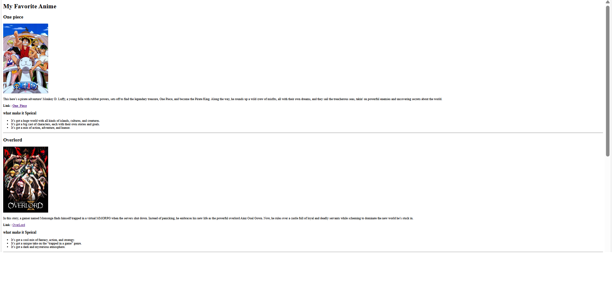

Project 1
This is a website I made for my favorite anime. It’s got a list of my top picks, along with summaries and links to more info. I used HTML and CSS to build it, and I learned a lot about layout and design along the way.
William Shakespeare

This is a website dedicated to William Shakespeare and his poems. It includes a collection of his most famous works, along with analyses and interpretations. I used HTML and CSS to create a visually appealing and informative site.
Featured Poem: Sonnet 18
Shall I compare thee to a summer's day?
Thou art more lovely and more temperate:
Rough winds do shake the darling buds of May,
And summer's lease hath all too short a date:
Famous Quotes:
- "To be, or not to be, that is the question."
- "All the world's a stage, and all the men and women merely players."
- "A rose by any other name would smell as sweet."